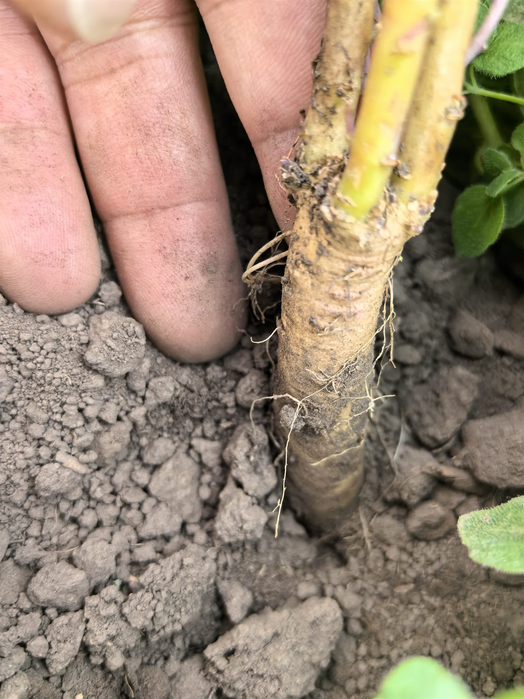
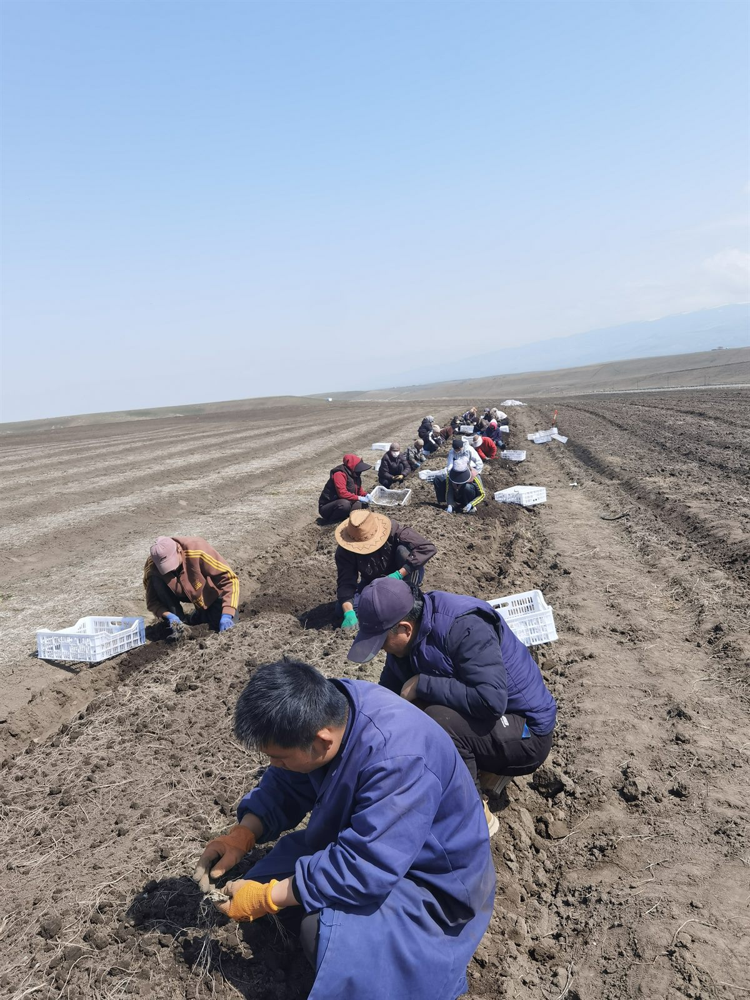
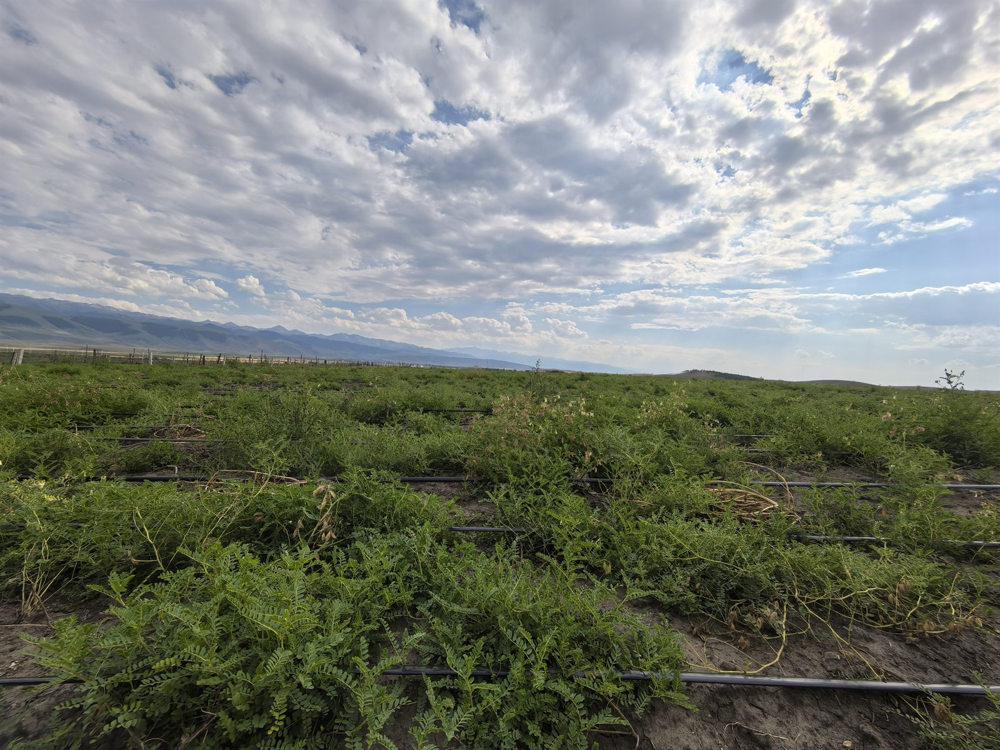
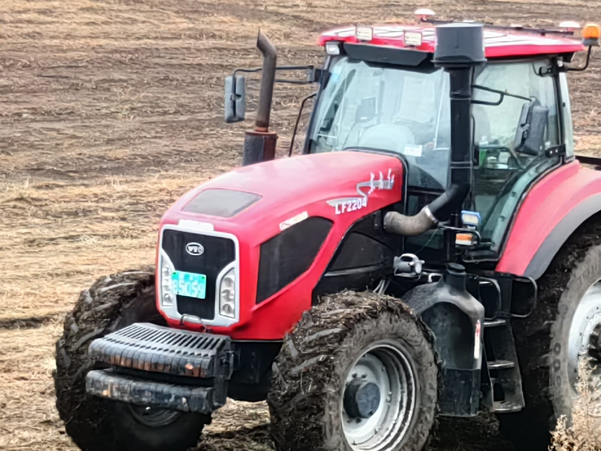
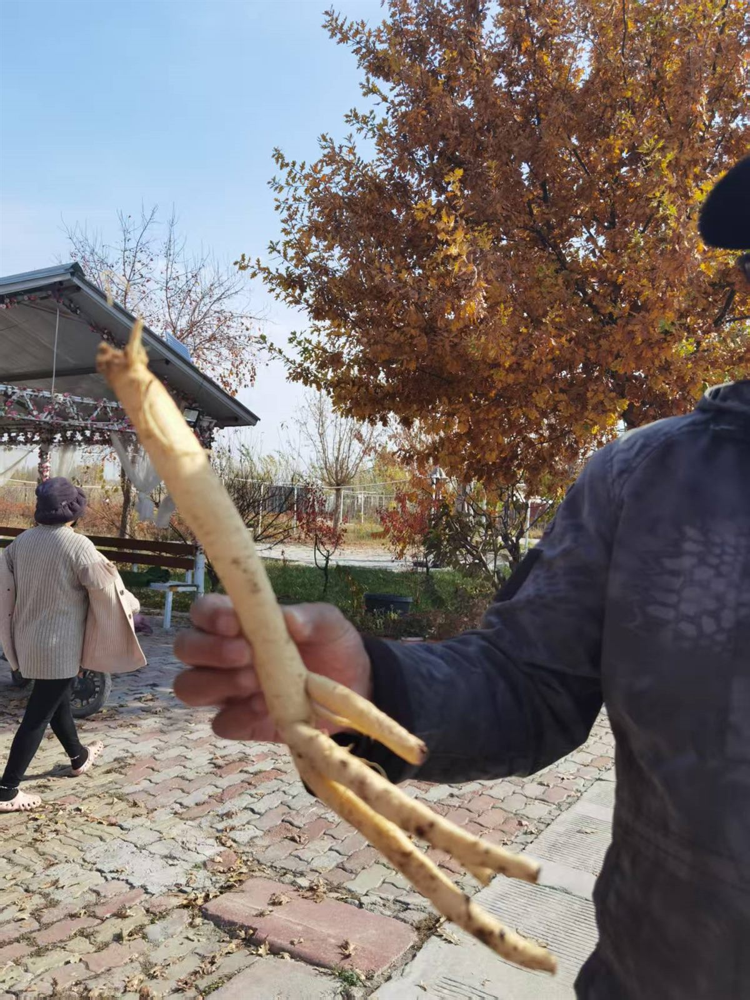
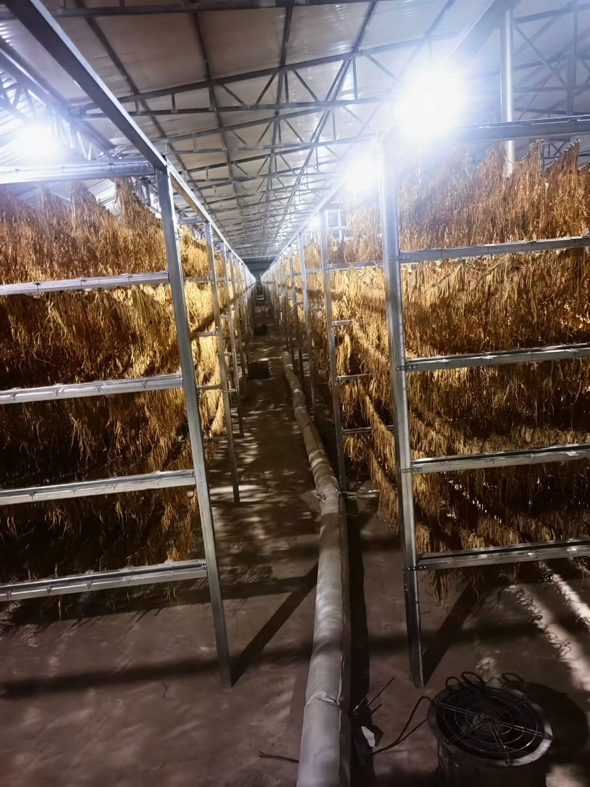
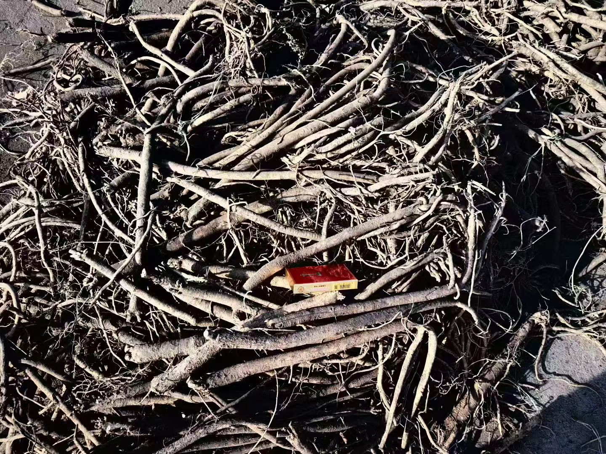
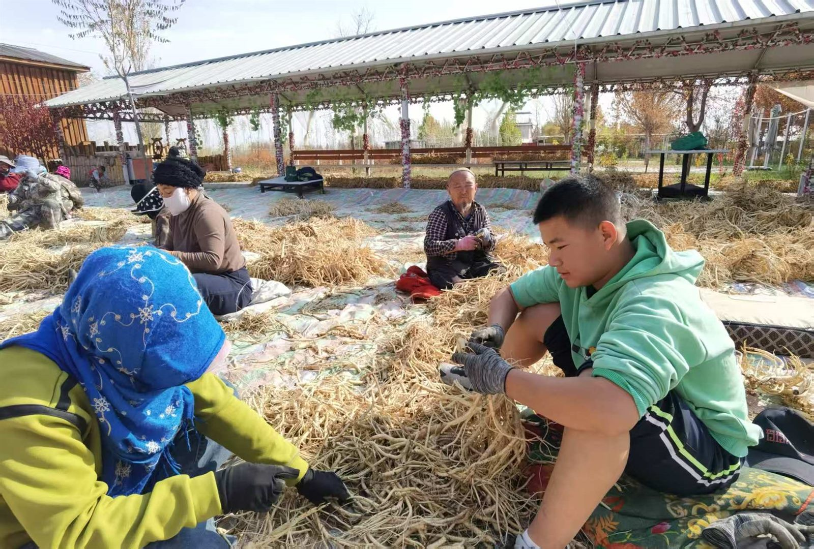

百草源深耕中药材种植、初加工与批发配送十余年，从源头基地到质检出库，让每一味药材都「道地、干净、可溯源」。



覆盖根茎、果实、菌藻、花叶等主流药材品类，支持按需定制与批量供货。
人参、黄芪、当归、三七、党参、天麻等道地根茎药材。
枸杞、陈皮、酸枣仁等果实与种子类药材，颗粒饱满。
灵芝、茯苓等菌藻类药材，仿野生培育，营养更足。
金银花、菊花等花叶类药材，色泽自然，清香宜人。
严格筛选产区、规格与批次，均为当季新货，欢迎索样验货。

大补元气、复脉固脱，优选长白山产区生晒参，芦头完整、参体饱满。

滋补肝肾、益精明目，粒大色红、口感甘甜，无硫无添加。

补气固表、利水消肿，切片均匀、粉性足，豆腥味纯正。
紧跟中医药政策与市场风向，同步公司最新进展与基地动态。

围绕种植源头、加工规范与全链条监管提出系统部署，中药材产业迎来新一轮提质窗口。
集采扩围推动优质优价，规范化、可溯源的饮片供应能力成为核心竞争力。

基地在土壤、水肥、采收等环节全面达标，为当季药材品质提供坚实保障。
严选核心产区基地，土壤气候适宜，从源头锁定药材道地性。
重金属、农残、含量等全项检测，批批留样，报告随货出具。
标准化炮制与分级，洁净车间操作，锁住药性、降低损耗。
恒温恒湿仓储与专业物流，全程可追溯，交付新鲜如初。
实拍记录种植基地、加工车间与药材日常。
告诉我们您的品种、规格与用量，我们将在 1 个工作日内提供样品与报价。